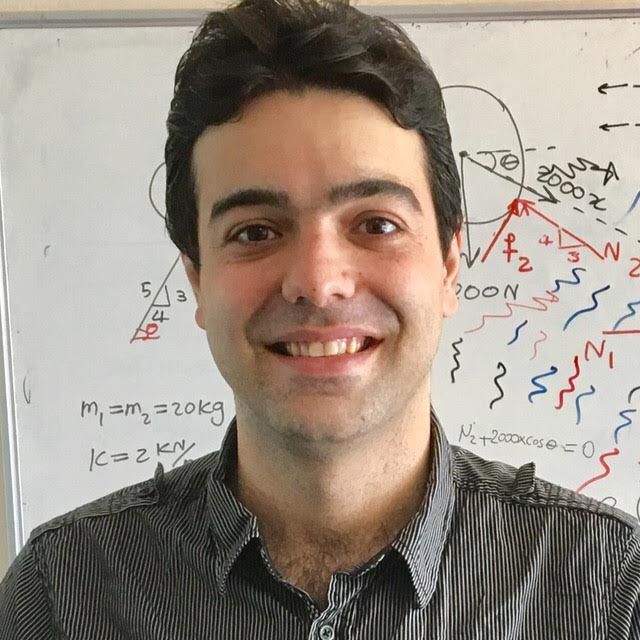

Asghar Aryanfar - Lab of Energy Materials and Sustainability (LEMS)
|  | Asghar Aryanfar Visiting Researcher Email: aryanfar at caltech dot edu |
{kind=link}
Brief Bio:
I am Assistant Professor of Mechanical Engineering at Bogazici University  as well as Visiting Researcher at Caltech
as well as Visiting Researcher at Caltech  . I received the BSc in Civil and Mechanical Engineering (double major, top 2%) from Sharif University of Technology
. I received the BSc in Civil and Mechanical Engineering (double major, top 2%) from Sharif University of Technology  in 2009 and the MSc and PhD in Mechanical Engineering from California Institute of Technology , in 2010 and 2015, respectively. Previously I was Assistant Professor at American University of Beirut (’19-’22) and Lecturer at Bahçeşehir University (’16-’19) and prior to that I was Postdoctoral Associate at UCLA Materials Science department (’15-’16). My research has been in developing multi-physics/chemistry methods and materials for energy storage, conversion, transport and sustainability. Current projects include analysis and design of state-of-the-art sustainable rechargeable batteries and prediction of heterogeneous cracking behavior for membranes/clads exposed to extreme states. Here is my Google Scholar page.
in 2009 and the MSc and PhD in Mechanical Engineering from California Institute of Technology , in 2010 and 2015, respectively. Previously I was Assistant Professor at American University of Beirut (’19-’22) and Lecturer at Bahçeşehir University (’16-’19) and prior to that I was Postdoctoral Associate at UCLA Materials Science department (’15-’16). My research has been in developing multi-physics/chemistry methods and materials for energy storage, conversion, transport and sustainability. Current projects include analysis and design of state-of-the-art sustainable rechargeable batteries and prediction of heterogeneous cracking behavior for membranes/clads exposed to extreme states. Here is my Google Scholar page.
Team:
collaborators: William Goddard III (Caltech) , Michael Hoffmann (Caltech), Jaime Marian (UCLA) , Tao Cheng (Soochow) , Irem Şanal (BAU) , S. Reza Damadi (U Tabriz) , Sunando Dasgupta (IIT) , Partha Mukherjee (Purdue) , Rachid Yazami (NTU).
students: Trina Dhara (ChE) , Mahmoud Yamani (CS) , Mounir El Skafi (ME) , Seif Qiblawi (ME) , Maria Khoury (ME) , Fadi Elias (ME) , Abdelrahman El Tallis (CE) , Ali Tayyar (ME) , Leatithia Zeitouny (ME).
past: Julia Greer (Caltech) , Bilge Yildiz (MIT) , Anton Van der Ven (UCSB) , Donghua Xu (OSU) , Mostafa Youssef (AUC) , Jing Yang (EPFL) , Agustin J. Colussi (Caltech) , Venkat Viswanathan (CMU) , Dimitri Saad (Stanford) , Sajed Medlej , Yara Ghamlouche , Jihad Jundi.
News:
Aug’23: Mounir and AbdelRahman are offered PhD scholarships from U. of Oxford (ME) and Columbia University (CE).
July’23: I have been rated as the best instructor in the department. Full report is here! and the summary screenshot is below:
Jun’23: Paper was accepted for publication in the Physical Review E: Dendritic Propagation on Circular Electrodes: The Impact of Curvature on the Packing Density
May’23: Paper was accepted for publication in the Journal of Electrochemical Energy Storage and Conversion: Enhancing the Thermal Dissipation in Batteries via Inclusion of Central Heat Sink
Apr’23: Paper was accepted for publication in the Construction and Building Materials: Acquiring the Size Distributions of the Aggregates using Percolation Modeling
Mar’23: Paper was accepted for publication in Mechanics of Materials: Governing Failure Mechanisms of Simplified Three-way Dendritic Branch under Compressive Load.
Feb’23: Paper was published in J Physical Chemistry C: The Role of Pulse Duty Cycle and Frequency in the Dendritic Compression.
Jan’23: Paper was published in the JOM: Coupling the Corrosion- and Pressure-Assisted Stress Buildup within the Zirconium in PWR Pipes.
Oct’22: Paper was accepted for publication in J Electrochemical Society (single author): Linearized Tracking of the Dendritic Evolution in Rechargeable Batteries.
Sep’22: I will give a talk in the EMRS conference at Warsaw, Poland
 .
.
Sep’22: Paper was accepted for publication in Journal of Mechanical Science and Technology: An estimation for the effective force transfer medium in radial loading of the cylindrical and spherical geometries.
Sep’22: I will give a talk in the QUENCH workshop (travel grant awarded) at KIT
 , Karlsruhe, Germany
, Karlsruhe, Germany  .
.
Jul’22: I will give a talk in the Nucleus 2022 Conference, Moscow, Russia
 .
. May’22: I will give a talk in Electrochemical Society Conference, Vancouver, CA
 .
.Feb’22: Paper accepted for publication in MRS Bulletin: Optimization of Charge Curve for the Extreme Inhibition of Growing Microstructures during Electrodeposition.
Jan’22: Paper published in the Materialia: Real-time interface-tracking framework for the evolution of the phases during the quenching of the steel balls.
Oct’21: I will be Session Chair for the Solid-State Batteries/Electrodes, Electrolytes and Interphases in MRS 2021 Fall meeting, Boston, MA
 .
.Jul’21: Paper published in Computational Materials Science: 3D Percolation Modeling for Predicting the Thermal Conductivity of Graphene-Polymer Composites.
Jun’21: Talk on Electrochemical Society Conference: Kinetics and Thermodynamics Driven Charging Protocols to Control the Formation of Dendrites in the Rechargeable Batteries
May’21: Paper published in the International Journal of Concrete Structures and Materials: Image Processing for the Plastic Viscosity of Cementitious Mortar with Super Absorbent Polymer
Apr’21: Talk on MRS Conference: Overview of the Charging Protocols for Halting the Dendrites in Rechargeable Batteries
Mar’21: Paper Published in the Journal of Chemical Physics: Real-time control of dendritic propagation in rechargeable batteries using adaptive pulse relaxation
Jan’21: Conference paper published in the Intelligent Decision Science: Image Processing for Workability of Concrete with Super Absorbent Polymer
Dec’20: Paper published in the Soft Matter: Elliptic Percolation Model for Predicting the Electrical Conductivity of Graphene-Polymer Composites
Nov’20: Paper published in the Electrochimica Acta: Pulse-Reverse Protocol for Efficient Suppression of Dendritic Micro-structures in Rechargeable Batteries
Oct’20: Paper published in the Computational Materials Science: A Novel Method for Estimating the Charge Equilibrium within the Dendrites of Rechargeable Batteries
Sep’20: Paper published in the Journal of Power Sources: Morphometry of Dendritic Materials in Rechargeable Batteries
Jul’20: Awarded Research Grant on COVID-19 treatment. ($12,000/yr)
Jun’20: Awarded Grant from University Research Board ($30,000/2yrs)
May’20: Awarded Grant from Masri Institute on Sustainability ($50,000/2yrs)
Apr’20: Outreach travel grant awarded ($2,500/yr)
Mar’20: Paper published in Structural Concrete: Novel Percolation-based Measure for Fibre Efficacy in Fiber‐reinforced Concrete Beams
Jan’20: Lab establishment proposal awarded ($60,000)
Dec’19: Sajed Medlej joins as a PhD student in Mechanical Engineering. Here a sample of his publication.
Nov’19: Book chapter published in Advances in Materials Science Research, Volume 39, ISBN: 978-1-53616-176-2: Electrochemical Systems:Electrodes and Double Layers
Oct’19: Talk at Electrochemical Society Conference (ECS), Atlanta, GA
: Optimal Pulse Charging for the Dendritic Electrodeposition in Mesoscale Electrodes
Sep’19: Paper published in Physical Review E: Finite Pulse Waves for Efficient Suppression of Mesoscale Dendrites in Rechargeable Batteries
Aug’19: Ayse Cetinler joins Politecnico di Milano
 as a graduate student in Civil Engineering.
as a graduate student in Civil Engineering. Jul’19: Paper published in Corrosion Science: Constriction percolation model for coupled diffusion-reaction corrosion of zirconium in PWR
May’19: Talk (sponsored) at American University of Beirut, Mechanical Engineering department, Beirut, Lebanon
 .
. Oct’18: Paper published at Journal of Nuclear Materials: Multilayer interface tracking model of zirconium clad oxidation
May’18: BAUBAP Grant awarded: Novel research on energy materials. (150,000 TL/2yrs)
Jan’18: Paper published at MRS Advances: Theoretical pulse charge for the optimal inhibition of growing dendrites
Dec’17: KOSGEB and BIGG Grants awarded: Fabrication of novel safe battery of higher energy density. (300,000 TL/2yrs)
Aug’17: Talk (sponsored) at QUENCH workshop (IAEA), KIT, Karlsruhe, Germany
: Novel percolation model in post-transition growth kinetics of heterogeneous zirconium oxide Jan’17: Publication featured in Caltech
News: Building Better BatteriesAug’16: Talk at Sadoway group, Massachusetts Institute of Technology
 , Cambridge, MA .
, Cambridge, MA . Jun’16: Talk at EMN Conference, Prague, Czech Republic
 .
. May’16: Talk (sponsored) at EPFL Mechanical Engineering department, Laussane, Switzerland
 : Engineering Electrochemical Materials for Energy Storage and Sustainability: From Rechargeable Batteries to Power Plants
: Engineering Electrochemical Materials for Energy Storage and Sustainability: From Rechargeable Batteries to Power Plants Apr’16: Talk on International Congress on Advances in Nuclear Power Plants ICAPP 2016, San Francisco, CA
. Mar’16: Talk (sponsored) at Tesla
 , Palo Alto, CA .
, Palo Alto, CA .Feb’16: Paper published at Journal of Metals Materials and Minerals (JOM): Integrated Computational Modeling of Water Side Corrosion in Zirconium Metal Clad Under Nominal LWR Operating Conditions
Nov’15: Two Talks (sponsored) at Apple
 , Cupertino, CA CA .
, Cupertino, CA CA . Oct’15: Interview on American Institute of Physics
 : Extending battery life via off-operation heating
: Extending battery life via off-operation heating Sep’15: Talk (sponsored) at Bilkent University Mechanical Engineering department, Ankara, Turkey
 .
. Aug’15: Paper published at Journal of Chemical Physics: Annealing kinetics of electrodeposited lithium dendrites
May’15: Talk at Electrochemical Society Conference (ECS), Chicago, IL
: Three Dimensional Modeling of Dendrite Growth in Rechargeable Lithium Metal Batteries Apr’15: Defended PhD! [Link]. Evaluating Team: Prof. Wiliam A. Goddard III, Prof. Michael R. Hoffmann, Prof. Julia R. Greer, Prof. Jose E. Andrade, Prof. Austin Minnich.
Feb’15: Paper published at Physical Chemistry Chemical Physics: Thermal relaxation of lithium dendrites
Dec’14: Talk at Bazant group, Massachusetts Institute of Technology
, Cambridge, MA . Aug’14: Paper published at Physical Chemistry Chemical Physics: Quantifying the dependence of dead lithium losses on the cycling period in lithium metal batteries
Jun’14: Talk (sponsored) at
 Corporation , Hillsboro, OR .
Corporation , Hillsboro, OR . May’14: Talk at Electrochemical Society Conference (ECS), Orlando, FL: Investigation of Lithium Dendrite Necking and Formation of Dead Lithium Crystals
Apr’14: Talk at Materials Research Society Conference (MRS), San Francisco, CA
. Mar’14: Paper published at Journal of Physical Chemistry Letters: Dynamics of Lithium Dendrite Growth and Inhibition: Pulse Charging Experiments and Monte Carlo Calculations
Jan’14: Paper published at Environmental Science and Technology: Effects of Anodic Potential and Chloride Ion on Overall Reactivity in Electrochemical Reactors Designed for Solar-Powered Wastewater Treatment
Dec’13: Talk at Materials Research Society Conference (MRS), Boston, MA
: Lithium Dendrite Growth Control Using Local Temperature Variation May’13:
 Interview, featured design in SolidWorks, novel closed-loop sanitation system.
Interview, featured design in SolidWorks, novel closed-loop sanitation system. Oct’12: Talk at Electrochemical Society Conference (ECS), Honolulu, Hawaii
: Modeling of State-Dependent Dendritic Growth Batteries with Potentiostatic Cycling Aug’12: First prize recipient, Novel self-sustaining sanitation system, Bill and Melinda Gates Foundation: [FastCompany] [Reuters] [Time] [Economist]
Highlights:
Caltech News coverage: Building Better Batteries (Jan’17). [Link]

CNN Interview/featured design, SolidWorks: novel closed-loop sanitation system (May’13). [Link1] [Link2]